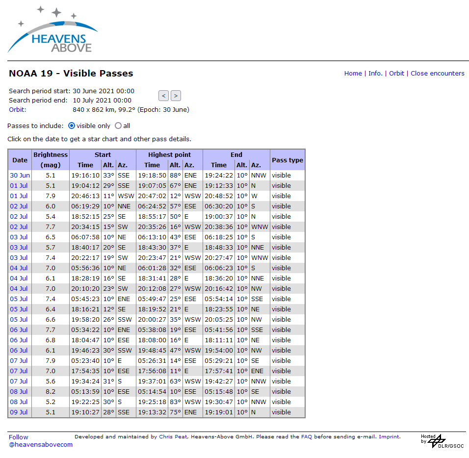
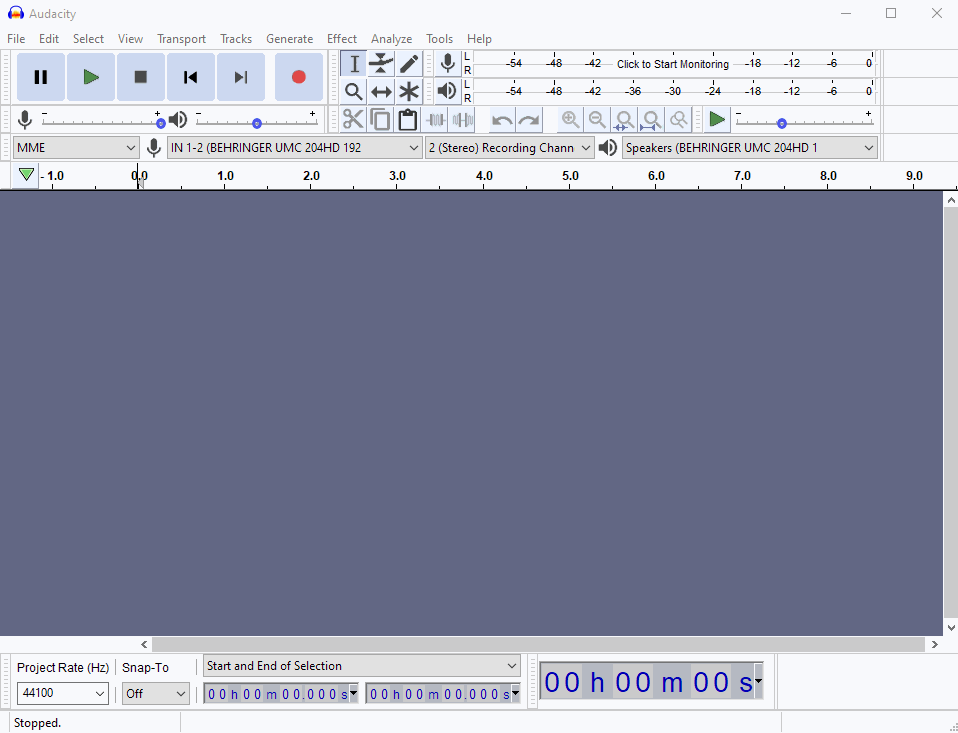
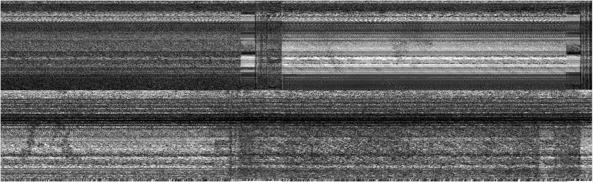
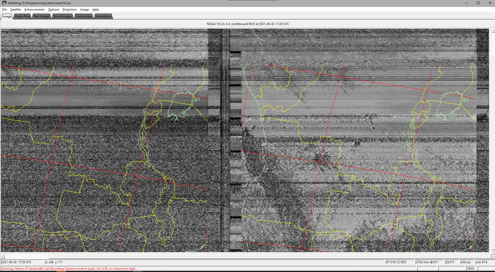

My experiences with amateur radio satellites.
You can use the heavens above site or n2yo to see what satellites are passing you and when.
Here is a collection of the satellite that I have decoded transmissions from.
The NOAAx satellites are weather satellites that broadcast a satellite image over VHF using the APT (Autmatic Picture Transmission) protocol They were commisioned by the National Oceanic and Atmospheric Administration
The two that often orbit over me are the NOAA-15 and the NOAA-19.
for that you can use the heavens above site or the Look4Sat android app.

The start and end times are when the satellite is passing and the altitude and azimuth are the angle and direction respectively. a 90° azimuth is directly over your head. you can use this information to help you orient yourself when you try to record the signal.
I used my baofeng uv5r to listen in on the frequency specified in the Look4Sat android app (137.62MHz in my case)
I recorded the audio using my cellphone. (I recorded a video but audio only would probably work better)
The longer and clearer recording you can get the better the final image will be.
I then stripped the audio from the video using ffmpeg
ffmpeg -i video.mp4 -c:v copy -vn audio.wav
If you are on windows you can use wxtoimg to decode your audio into a satellite image
wxtoimg is abandonware and getting hold of a copy can be a bit tricky with all the reposted copies available. I used this link to get my installer.
The software is old enough that the windows version should work without issues in wine on linux but there is better software available on linux.
The audio then needs to be mixed down to mono and resampled at 11025Hz to match the requirements for wxtoimg
the audio then needs to be saved as a .wav file.
This can be done using Audacity
note: if you have ffmpeg installed audacity may be able to automatically extract the audio from a video file on import

the audio can then be imported into wxtoimg and it will be automatically processed into an image
My first attempt went quite poorly

On my second attempt i was able to see some border informaiton and part of an image on the left

but after giving it few more shots and taking a much longer recording I was able to decode a pretty decent image.

Here is a false color image and the raw+infrared image (you can make out some clouds as well as the west side of Africa)
The boafeng doesn't really have enough bandwidth to get a full quality image and it's really easy to accidentally move and mess up the signal (which you can see in the vertical lines)
I still haven't managed to get my SDR working for this. (I think i might need a different antenna) but it should provide much better image quality.
I will be trying this again with an antenna and an SDR which should provide higher bandwidth (and thus more data) for a better quality image.